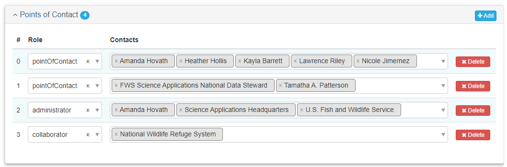
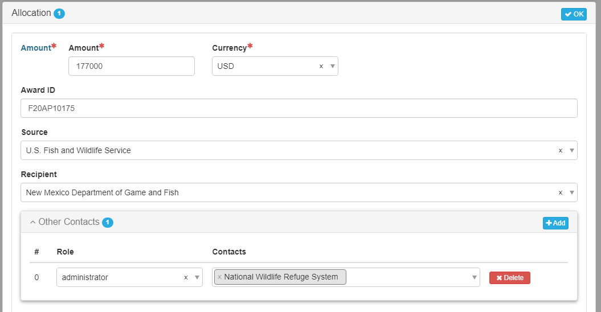

FWS Co-Funded Projects
Applicability
Refer to this protocol if:
- One or more regions or programs each contribute funding for a project and distinct sub-projects or products cannot be identified and attributed to any region or program.
Metadata Responsibility
The lead region or program data manager is responsible for project and product metadata. There should only ONLY ONE metadata record for each multi-regional or programmatic project and product. These records will be searchable in the Science Catalog for each collaborating entity identified in the metadata.
In addition to standard metadata requirements as described in Project Entry Guidance, include the following additions.
Main/Point of Contacts
Add the name of all funding entities as a “collaborator.”

The lead region or program should be listed as “administrator” and does not need to be added again as a “collaborator.”
Main/Abstract
Add the following text as as the last sentence:
“This [project/product] was a collaborative effort and co-funded by multiple USFWS regions and/or programs: Region A, Region B, and Region C.”
- Example: This project was a collaborative effort and co-funded by multiple USFWS regions: Upper Midwest Region 3 & Northeast Region 5 .
- Example: This product was a collaborative effort and co-funded by multiple USFWS regions and programs: Midwest Region 3 Science Applications and Migratory Birds Programs.
Metadata/Metadata Contacts
Default is USFWS as “publisher.”
Collaborators do not need to be listed here.
Funding (for Projects only)
Add a separate funding allocation for each year and each region or program that provided funding as described in Funding Tab: Project.
- The source should be U.S. Fish and Wildlife Service.
- Add the funding region or program associated with the amount as the “administrator” in the Other Contacts section in mdEditor (see Figure 2).
- Each funding allocation must be entered separately for each funding program or region.
